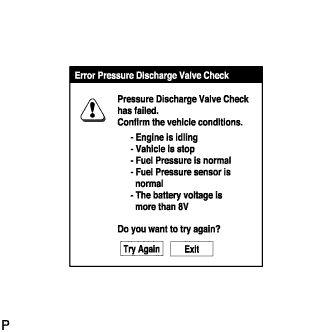
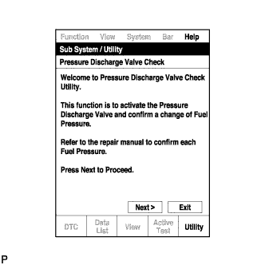

ТОПЛИВНАЯ СИСТЕМА (для моделей без DPF) > ПРОВЕРКА БЕЗ СНЯТИЯ С АВТОМОБИЛЯ |
| 1. ПРОВЕРЬТЕ ДАВЛЕНИЕ В ТОПЛИВНОЙ СИСТЕМЕ |
Считайте данные в режиме Data List
Прогрейте двигатель.
Выключите зажигание.
Подсоедините портативный диагностический прибор к DLC3.
Включите зажигание (IG).
Включите портативный диагностический прибор.
Войдите в следующие меню: Powertrain / Engine / Data List.
Снимите показания параметров в режиме Data List, отображаемые на дисплее диагностического прибора.
| Информация на дисплее прибора | Измеряемая величина / диапазон измерения | Нормальное состояние |
| Fuel Press | Давление в топливной системе / Мин.: 0 кПа, макс.: 250000 кПа | Холостой ход: 30000 - 40000 кПа |
| Target Common Rail Pressure | Заданное давление в топливной системе Common Rail / Мин.: 0 кПа, макс.: 250000 кПа | 25000-180000 кПа во время работы двигателя |
| 2. ПРОВЕРЬТЕ, НЕТ ЛИ УТЕЧЕК ТОПЛИВА |
Убедитесь, что когда двигатель остановлен, нет утечки из какой-либо части топливной системы. При обнаружении утечки топлива отремонтируйте или замените детали, если это необходимо.
Запустите двигатель и убедитесь, что в топливной системе нет утечек. При обнаружении утечки топлива отремонтируйте или замените детали, если это необходимо.
Отсоедините возвратный шланг от топливной системы Common Rail.
Запустите двигатель и проверьте возвратный трубопровод на наличие утечек топлива.
В случае наличия утечек топлива замените топливную систему Common Rail.
Подсоедините портативный диагностический прибор к DLC3.
Запустите двигатель и включите портативный диагностический прибор.
В режиме Active Test портативного диагностического прибора выберите Fuel Leak Test.
Если портативный диагностический прибор недоступен, быстро до упора нажмите педаль акселератора. Увеличьте частоту вращения коленчатого вала двигателя до максимума и поддерживайте ее в течение 2 с. Повторите эту операцию несколько раз.
Убедитесь в отсутствии утечек топлива из топливной системы.
Подсоедините возвратный шланг к топливной системе Common Rail.
| 3. ПРОВЕРЬТЕ КЛАПАН СБРОСА ДАВЛЕНИЯ |
Подсоедините портативный диагностический прибор к DLC3.
Включите зажигание (IG).
|  |
Включите портативный диагностический прибор.
Войдите в следующие меню: Powertrain / Engine / Utility / Pressure Discharge Valve Check.
|  |
Нажмите "Next".
 |
Нажмите "Next" еще раз, чтобы продолжить работу.
 |
Выберите "Close to Open Check" (проверка открывания).
Нажмите "Next".
Снимите показание "Open and Engine OFF" (открыт, и зажигание выключено).

| *1 | Fuel Press (Always Closed Check) | *2 | Fuel Press (Close to Open Check) |
| *3 | Engine Speed (Частота вращения коленчатого вала двигателя) | *4 | Сигнал прекращения подачи топлива |
| *5 | Запрещение работы топливного перепускного клапана | *6 | Работа топливного перепускного клапана (Always Closed Check) |
| *7 | Работа топливного перепускного клапана (Close to Open Check) | - | - |
| *a | Моменты регистрации значения Fuel Press | *b | Закрыт (вкл) |
| *c | Открыт (вкл) | - | - |
 | Начало работы топливного перепускного клапана | - | - |
| 4. УДАЛИТЕ ВОЗДУХ ИЗ ТОПЛИВНОЙ СИСТЕМЫ |
 |
С помощью ручного насоса, установленного на крышке топливного фильтра, удалите воздух из топливной системы. Продолжайте прокачку, пока сопротивление насоса при работе не возрастет.
Запустите двигатель.
Если двигатель запускается, перейдите к следующему шагу.
Если запуск двигателя невозможен, прокачайте систему снова с помощью ручного насоса до повышения сопротивления насоса (см. процедуры выше). Затем запустите двигатель.
Выключите зажигание.
Подсоедините портативный диагностический прибор к DLC3.
Включите зажигание (IG) и портативный диагностический прибор.
Сбросьте коды DTC (Нажмите здесь).
Запустите двигатель.*1
 |
Войдите в следующие меню: Powertrain / Engine and ECT / Active Test / Test the Fuel Leak.*2
| *a | Для справки Испытание в режиме Active Test |
Выполните следующее испытание 5 раз с интервалами включения/выключения 10 с: Active Test / Test the Fuel Leak.*3
После 5-го испытания в режиме Active Test дайте двигателю поработать на холостом ходу в течение не менее 3 мин.

Войдите в следующие меню: Powertrain / Engine and ECT / DTC.
Считайте текущие коды DTC.
Сбросьте коды DTC (Нажмите здесь).
Повторите операции с *1 по *3.
Войдите в следующие меню: Powertrain / Engine and ECT / DTC.
Считайте текущие коды DTC.
| 5. ПРОВЕРЬТЕ КОНТРОЛЬНУЮ ЛАМПУ ТОПЛИВНОГО ФИЛЬТРА И СЛЕЙТЕ ЖИДКОСТЬ |
Проверьте топливный фильтр по мультиинформационному дисплею.
Слейте жидкость.
Для моделей с подогревателем топлива:
Отсоедините разъем датчика уровня жидкости и разъем подогревателя топлива.
Для моделей с датчиком засорения:
Отсоедините разъем датчика уровня и разъем датчика засорения.
Отверните 2 гайки и поднимите топливный фильтр в сборе.
Подсоедините шланг к пробке сливного отверстия топливного фильтра. Опустите другой конец шланга в резервуар ниже пробки сливного отверстия топливного фильтра.
| *1 | Пробка сливного отверстия топливного фильтра |
| *2 | Контейнер |
Ослабьте пробку сливного отверстия топливного фильтра, чтобы слить жидкость.
Затяните пробку сливного отверстия топливного фильтра вручную.
Установите топливный фильтр в сборе и закрепите его 2 гайками.
Для моделей с подогревателем топлива:
Подсоедините разъем датчика уровня жидкости и разъем подогревателя топлива.
Для моделей с датчиком засорения:
Подсоедините разъем датчика уровня и разъем датчика засорения.